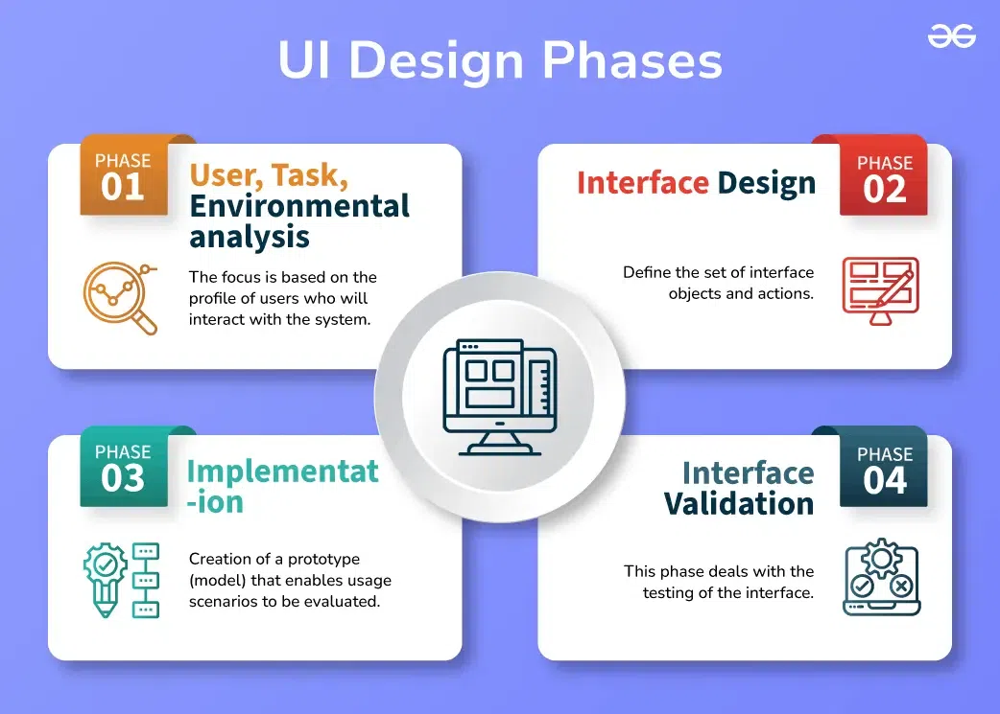
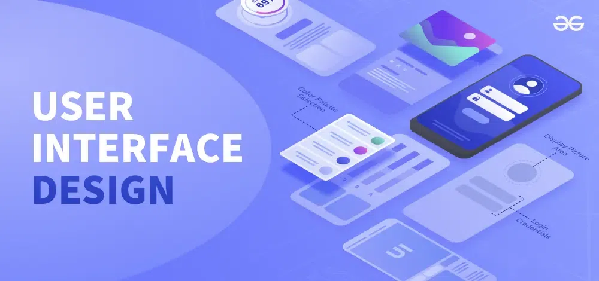
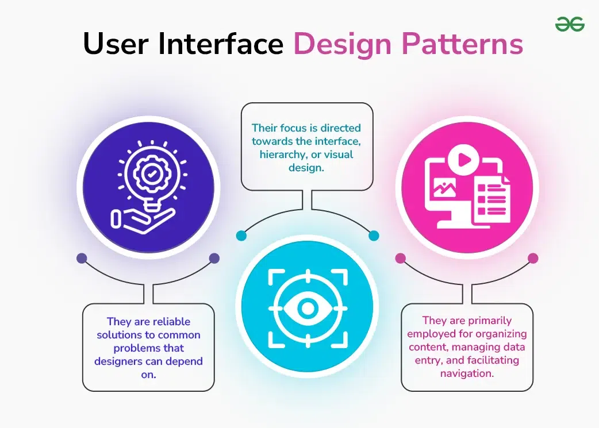
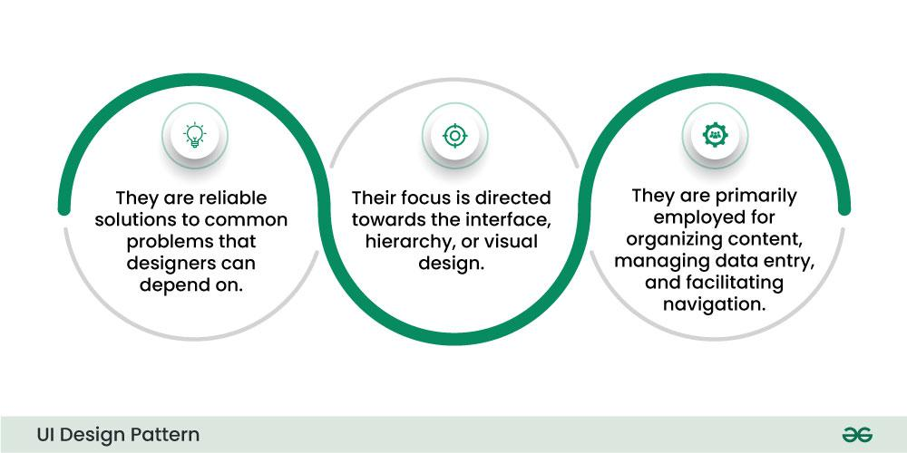

5.17 User Interface Design
The user interface (UI) is the front-end application view through which the user interacts to use the software. UI design is a crucial aspect of software engineering — it is the primary means by which users experience the application. A well-designed interface improves usability, user experience, and overall effectiveness of the software.
UI design spans both the interface design level (system as black box — inputs/outputs at the architectural level) and the dedicated UI design process (analysis, design, construction, and validation of the actual user-facing screens and controls).

Qualities of a good user interface
Software becomes more popular when its user interface is:
- Attractive: Visually appealing layout, colour scheme, and typography that engage the user without distracting from the task.
- Simple to use: Clear navigation and minimal steps to accomplish common tasks — users should not need extensive training.
- Responsive in a short time: The interface reacts quickly to user actions; long delays frustrate users and reduce productivity.
- Clear to understand: Labels, messages, and controls are unambiguous — users always know what each element does.
- Consistent on all interface screens: Similar actions look and behave the same way throughout the application — same icons, colours, and navigation patterns on every screen.
Types of user interface
- Command Line Interface (CLI): Provides a command prompt where the user types commands and feeds them to the system. The user must remember the syntax of each command and its correct use — no graphical aids. Examples: terminal, DOS prompt, Linux shell.
- Graphical User Interface (GUI): Provides a simple, interactive visual interface using windows, icons, menus, and pointers. GUI can be a combination of both hardware and software components. The user interprets and interacts with the software through visual elements rather than typed commands. Examples: desktop applications, web browsers, mobile apps.
Interface design level (system black box)

- At the interface design level (see §5.2), the system is treated as a black box — internal workings are ignored.
- Attention is focused on the dialogue between the target system and users, devices, and other systems (agents).
- Interface design must specify: precise description of incoming events/messages the system must respond to; outgoing events/messages the system must produce; data formats for inputs and outputs; ordering and timing relationships between incoming and outgoing events.
User interface design process
The analysis and design of a user interface is iterative and can be represented by a spiral model — the design is refined through repeated cycles of analysis, design, prototype, and validation.

The UI design process consists of four framework activities:
1. User, task, environmental analysis, and modelling
- Initially, the focus is on the profile of users who will interact with the system — understanding their skills, knowledge, and type of user.
- Based on user profiles, users are categorised and requirements are gathered from each category.
- From the requirements, developers understand how to develop the interface.
- Once all requirements are gathered, a detailed analysis is conducted.
- Task analysis: Tasks that the user performs to establish the goals of the system are identified, described, and elaborated.
- Environmental analysis: Focuses on the physical work environment. Key questions include: Where will the interface be located physically? Will the user be sitting, standing, or performing other tasks? Does the interface hardware accommodate space, light, or noise constraints? Are there special human factors considerations driven by environmental factors?
2. Interface design
- The goal is to define the set of interface objects and actions — control mechanisms that enable the user to perform desired tasks.
- Indicate how these control mechanisms affect the system.
- Specify the action sequence of tasks and subtasks — also called a user scenario.
- Indicate the state of the system when the user performs a particular task.
- Design issues considered during refinement: response time, command and action structure, error handling, and help facilities.
- Always follow the three golden rules stated by Theo Mandel (see below).
- This phase serves as the foundation for the implementation phase.
3. Interface construction and implementation
- Implementation begins with the creation of a prototype (model) that enables usage scenarios to be evaluated.
- As the iterative design process continues, a User Interface toolkit is used — allowing creation of windows, menus, device interaction, error messages, commands, and other elements of an interactive environment.
- Wireframes, mock-ups, and high-fidelity prototypes are built and refined based on user feedback before final coding.
4. Interface validation
- This phase focuses on testing the interface.
- The interface must perform tasks correctly and handle a variety of tasks reliably.
- It must achieve all user requirements.
- It must be easy to use and easy to learn.
- Users should accept the interface as useful in their work.
Theo Mandel's golden rules of UI design
Three golden rules must be followed during interface design:
Rule 1 — Place the user in control
- Do not force unnecessary actions: Define interaction modes so the user is not forced into unnecessary or undesired actions — the user should easily enter and exit any mode with little effort.
- Provide flexible interaction: Different users prefer different mechanisms — keyboard commands, mouse, touch screen — so all interaction mechanisms should be supported where appropriate.
- Allow interruptible and undoable interaction: When a user performs a sequence of actions, they must be able to interrupt the sequence to do other work without losing completed work; undo operations must be supported.
- Streamline interaction as skill advances: Advanced users should be able to customise the interface and use faster interaction mechanisms (shortcuts, macros) so they are not limited by beginner-level controls.
- Hide technical internals: Casual users should not be aware of internal technical details — they interact with the interface only to do their work.
- Design for direct interaction with on-screen objects: Users should manipulate objects that appear on the screen directly (drag, click, resize) to perform tasks — this gives a sense of control.
Rule 2 — Reduce the user's memory load
- Reduce short-term memory demand: During complex tasks, demand on short-term memory is significant — the interface should reduce the need to remember previously done actions, given inputs, and results.
- Establish meaningful defaults: Provide sensible initial defaults for the average user; advanced users can add or change features as needed.
- Define intuitive shortcuts: Use mnemonics — keyboard shortcuts that are easy to remember and map to common actions.
- Use real-world metaphors: Represent on-screen elements as metaphors for real-world entities (folder, trash bin, desktop) so users understand them immediately.
- Disclose information progressively: Organise the interface hierarchically — present high-level information first; reveal more detail only after the user indicates interest (e.g., click to expand).
Rule 3 — Make the interface consistent
- Provide meaningful context: Many interfaces have dozens of screens — provide consistent indicators so the user always knows where they are, which page they came from, and where they can navigate next.
- Maintain consistency across a family of applications: When developing a set of related applications, all should follow and implement the same design rules so consistency is maintained across the product family.
- Do not change established conventions without reason: If past interactive models have created user expectations, do not make changes unless there is a compelling reason to do so.
Key principles for designing user interfaces
- User-centred design: UI design should focus on the needs and preferences of the user — understand the user's goals, tasks, and context of use, and design interfaces that meet their needs and expectations.
- Consistency: Consistent design elements (icons, colour schemes, navigation menus, terminology) should be used throughout the application so users can learn once and apply everywhere.
- Simplicity: Interfaces should use clear, concise language and intuitive navigation — users should accomplish tasks without being overwhelmed by unnecessary complexity.
- Feedback: Users must understand the results of their actions — feedback can take the form of visual cues, messages, progress indicators, or sounds confirming that an action succeeded or failed.
- Accessibility: Interfaces should be accessible to all users regardless of ability — consider colour contrast, font size, keyboard navigation, and assistive technologies such as screen readers.
- Flexibility: Interfaces should be customisable so users can tailor the interface to their own preferences and skill level — supporting both novice and expert users.
UI design patterns
UI design patterns are reusable solutions to common interface design problems:


- Navigation patterns: Menu bars, breadcrumbs, tabs, and sidebars that help users move through the application.
- Form design patterns: Standard layouts for input forms — clear labels, logical field order, inline validation.
- Modal patterns: Pop-ups or overlays for specific interactions — confirming actions, displaying additional information.
- Card patterns: Container elements for presenting information in a structured, scannable format — common in dashboards and lists.
- Search and filter patterns: Search bars, filters, and sorting controls for finding content in large datasets.
The UI design pattern model has four elements: Problem (what needs solving), Context (where the problem occurs), Solution (the pattern applied), and Examples (real-world use).
Relationship to other design topics
- Interface design is the first of the three design levels (§5.2).
- Use case diagrams (§5.16) help outline how users interact with the system and define user scenarios during design.
- Detailed design specifies module-level UI elements — forms, screens, dialogues (§5.5).
- A well-designed architecture isolates UI concerns from business logic — interface changes should not affect core system functionality.
Q: What is user interface design? Describe the four stages of the UI design process. State Theo Mandel's golden rules.
Model answer points:
- Define UI: front-end view for user interaction; qualities: attractive, simple, responsive, clear, consistent.
- Types: CLI (command prompt, must remember syntax) vs GUI (visual, windows/icons/menus).
- Four stages: (1) user/task/environment analysis — profiles, tasks, physical environment; (2) interface design — objects, actions, user scenarios, Mandel's rules; (3) construction — prototype, UI toolkit; (4) validation — test correctness, usability, learnability, user acceptance.
- Mandel's 3 rules: place user in control (flexible, undoable, hide internals); reduce memory load (defaults, metaphors, progressive disclosure); make consistent (context, family of apps, don't break conventions).
- Principles: user-centred, consistency, simplicity, feedback, accessibility, flexibility.